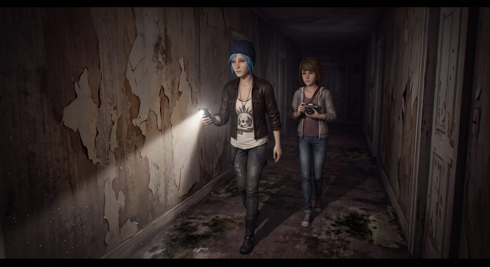

旅館 · 第二章 B:Chloe / Max

一、樓上
二樓的走廊比大廳更昏暗,牆紙大片剝落,踩在腳下的地毯已經發霉發黑,散發著一股陳年潮濕的氣味。
Chloe 舉著手機手電筒,在前面探路,Max 跟在她身後半步,手裡的相機始終端在胸前,卻遲遲沒有按下快門的心思。
「妳還好嗎?」Chloe 察覺到她的沉默,回頭看了一眼。
「就是,」Max 猶豫了一下,「有點不安。妳知道我這種預感,通常不會無緣無故出現。」
「浣熊而已,」Chloe 安撫地拍拍她的肩,「別自己嚇自己。」
Max 沒再說話,只是握緊了相機背帶。她試著集中精神,像過去無數次那樣,去感受那種細微的、屬於「即將發生的事」的預兆波動——但這一次,她什麼都沒感覺到。走廊安靜得反常,安靜到她甚至開始懷疑,是不是自己的能力這次真的什麼都探測不到。
她沒有意識到,這種「什麼都感覺不到」的安靜,本身就是最不祥的訊號。
二、求救聲
兩人走到二樓中段,一段模糊、斷斷續續的呼救聲,忽然從走廊盡頭某個房間傳來。
「……救命……有人嗎……」
那聲音又輕又飄忽,像是從很遠的地方傳來,帶著明顯的痛苦和驚恐。
「這是——」Chloe 臉色一變,「Brooke 的聲音?」
Max 心臟猛地一沉,下意識就要往前衝:「我們得——」
「等等。」Chloe 一把拉住她,罕見地表現出謹慎,「先確認一下,萬一是——」
呼救聲又響了一次,這次帶著哭腔,聽起來更加真實、更加急迫。
「Chloe,拜託……救我……」
任何猶豫在這一刻都顯得殘忍。兩人幾乎是同時邁開腳步,朝著聲音傳來的方向奔去,推開了那扇虛掩的房門。
房間裡空無一人。
只有牆角一個老舊的擴音喇叭,還在斷斷續續地播放著同一段錄音,循環往復,帶著輕微的雜訊——那根本不是任何人的求救,是一段預先錄好、透過旅館廣播系統播放的音檔。
Max 瞬間僵住,渾身血液像是凍結了一樣。
「這是陷阱。」她的聲音發顫。
話音未落,黑暗中,一道身影從房間另一側的陰影裡幾乎是無聲無息地欺身而上。
一切發生得太快,Max 的預感這次沒能提前捕捉到任何徵兆——沒有熟悉的那種「即將發生某事」的細微波動,彷彿對方的存在完全遊走在她的感知之外。
「小心!」是 Chloe 先反應過來,一把將 Max 猛地往旁邊推開,自己卻被那道黑影擦著肩膀劃過,一股火辣的疼痛瞬間從手臂傳來——不算致命,但足以讓她悶哼一聲,踉蹌著撞上牆壁。
「Chloe!」
「跑!」Chloe 咬著牙,拽住 Max 的手腕,不顧一切地朝房門衝去。
兩人連滾帶爬地衝出房間,順著走廊沒命地狂奔,直到轉過兩個彎,確認身後沒有追上來的腳步聲,才敢停下來喘氣。
Max 死死盯著 Chloe 手臂上滲血的傷口,眼眶瞬間紅了:「妳受傷了——」
「小傷而已。」Chloe 咬牙笑了一下,笑容卻有點勉強,「我沒事,別自己嚇自己。」
Max 卻控制不住地開始發抖——不是因為害怕,是因為她第一次,如此清晰地意識到:自己的能力,這次可能沒辦法在關鍵時刻救 Chloe。
那種無力感,比任何肉眼可見的傷口都更讓她心慌。
三、意外的發現
兩人躲進一間儲物室暫時喘息,Chloe 撕下衣角替自己草草包紮傷口,Max 蹲在她面前,手還在抖,努力想幫上忙卻不知從何下手。
「妳先冷靜,」Chloe 反過來安慰她,「我們得想辦法離開這層樓,回大廳跟其他人會合。」
正說著,Chloe 的目光無意間掃過儲物室角落一扇不起眼的小門——那扇門上掛著一把看起來嶄新、與這棟廢棄建築格格不入的鎖。
出於一貫的莽撞直覺,她一腳踹了上去。
門應聲而開。
裡面不是儲物空間,而是一整套精心佈置的監控與音響控制設備——小型顯示器上分割顯示著旅館各處走廊的即時畫面,一旁的控制台連接著剛才播放「求救聲」的那套廣播系統。牆上用圖釘釘著幾張手繪的樓層平面圖,紙張邊緣已經泛黃捲曲,顯然不是這次案子才畫的。
Max 的目光顫抖著掃過那張二樓平面圖——每一個房間的輪廓旁,都用紅筆標注著簡短的字句,筆跡工整得詭異,像是在寫一份例行報告,而不是犯罪紀錄:
205 號房:回音效果最佳,適合音源誘導。
盡頭儲物間:唯一雙出口房間,需優先封鎖後門。
二樓消防栓旁盲區,監控涵蓋率僅 62%,已加裝補強鏡頭。
而在走廊轉角處,一個被反覆描過好幾遍、墨色最深的圈,旁邊只寫了四個字:
最佳伏擊點。
那個圈,精準地圈在她們兩人剛才逃出來的那個房間門口。
Chloe 倒吸一口涼氣,伸手想去碰那張紙,又像是被燙到一樣縮回手。
「這不是幻覺,」她的聲音有點抖,「也不是什麼老舊系統故障——這是有人,提前規劃好的。他早就知道我們會往哪走。」
Max 死死盯著那個「最佳伏擊點」的標註,渾身泛起一層雞皮疙瘩:「他不是臨時起意的……這些標註看起來,像是準備了很久。」
「是誘餌。」Chloe 咬牙,目光掃過整面牆密密麻麻的標註,每一條走廊、每一個房間,都被人用近乎變態的耐心規劃過,「這整棟樓,對他來說根本不是躲藏的地方——是他的獵場。」
她的目光落在控制台角落一支老舊但還能用的對講機上,毫不猶豫地抓起來,按下通話鍵,聲音因為壓抑著憤怒和恐懼而微微發顫。
「Kenji,能聽到嗎?收到請回答!」
一陣雜訊過後,對講機裡傳來熟悉的、帶著喘息的聲音。
「……聽到了。Chloe?妳們還好嗎?」
「有人在操控這棟樓的廣播和監控系統,」Chloe 語速飛快,「我們在二樓找到一個控制室,裡面全是設備!Warren 呢?」
對講機那頭沉默了一瞬,接著傳來 Brooke 帶著哭腔的聲音:「Warren 跟我們走散了……」
Chloe 和 Max 對視一眼,心臟同時往下一沉。
四、裝置
「聽我說,」Kenji 的聲音重新傳來,雖然急促,卻努力維持著平穩,「我這邊剛切斷了三樓的照明和門鎖,但我沒辦法確定 Warren 的位置。妳們找到的那個控制室——上面有沒有一個接著細長天線的小盒子,外殼是黑色的?」
Chloe 低頭在控制台上翻找,很快找到了符合描述的裝置:「找到了。」
「那是訊號干擾發射器,」Kenji 說,「範圍應該只涵蓋這棟樓。如果我沒猜錯,凶手身上應該帶著某種隨身監控裝置——耳機式攝影機之類的,靠這台主機系統接收即時畫面,這就是為什麼他總能『恰好』知道妳們在哪。」
「你的意思是,」Max倒吸一口氣,「他一直在『看』著我們?」
「對,」Kenji 的語氣沉了下來,「而且他很可能靠著即時畫面,精準避開了 Max 妳的超能力——如果他知道自己下一秒要出現在哪個畫面裡,那對妳來說,那就不叫『未來』,那已經是他計畫好的『現在』。」
Max 猛地瞪大眼睛,終於明白剛才那種可怕的「感覺不到任何預兆」是怎麼回事——不是她的能力失靈了,是凶手透過監控系統,把自己的行動變成了一種「被安排好的既定事實」,而不是「即將發生的未知」。她的預兆能力,本質上是在讀取「尚未確定的可能性」,而一個透過螢幕精準計算好每一步的人,根本不留任何「可能性」給她去預判。
「我能想辦法遠端讓那套監控系統暫時失效,」Kenji 快速說道,「但我需要妳們把控制室裡另一個裝置,實體帶到 Max 身邊——一個小型的訊號阻斷器,外型像個舊式呼叫器。等妳把它帶到 Max 手上、按下去的那一刻,凶手隨身的攝影機畫面會直接變成雪花雜訊,他會瞬間失去『預先看到』的優勢。」
Chloe 迅速翻找,在控制台抽屜深處找到一個灰撲撲的舊式呼叫器造型裝置,一把塞進 Max 手裡。
「我馬上把系統這邊也一起搞亂,」Kenji 的聲音帶著一絲罕見的緊繃,「準備好了就按下去——祝妳們好運。」
五、逆轉
Max 握著那個裝置,指節因為用力而發白。她看向 Chloe,對方的手臂還滲著血,卻依然朝她比了個「妳可以的」的手勢。
她深吸一口氣,按下了裝置的按鈕。
控制室裡那排監控螢幕,幾乎在同一瞬間,齊刷刷地炸成一片雪花雜訊。
幾乎是同時,Max 感覺到一種久違的、熟悉的清晰感——那種屬於「未來重新變得不確定」的感覺,重新回到了她的意識邊緣。
彷彿驗證這一切一樣,走廊外傳來一陣略顯慌亂的腳步聲——不再是先前那種從容不迫、精準冷靜的節奏,而是帶著一絲遲疑和焦躁,像是一個突然失去了「上帝視角」、必須重新靠自己雙眼判斷的獵人。
「他現在瞎了。」Chloe 低聲說,眼裡重新燃起狠勁,「至少,暫時是。」
Max 握緊拳頭,那種久違的、屬於自己身體的預感,正一點一點重新甦醒。她閉上眼睛,集中精神——
一絲微弱卻清晰的畫面,閃過她的腦海:走廊轉角,一道黑影即將出現的方位,時間精準到幾乎是下一秒。
「他要從左邊過來。」Max 猛地睜眼,一把拉住 Chloe,「跟我來,我們能繞到他身後。」
Chloe 難得沒有質疑,幾乎是無條件地信任了這句話,跟著她的腳步,悄無聲息地摸向了那道尚未察覺自己已經「看不見」的黑影。